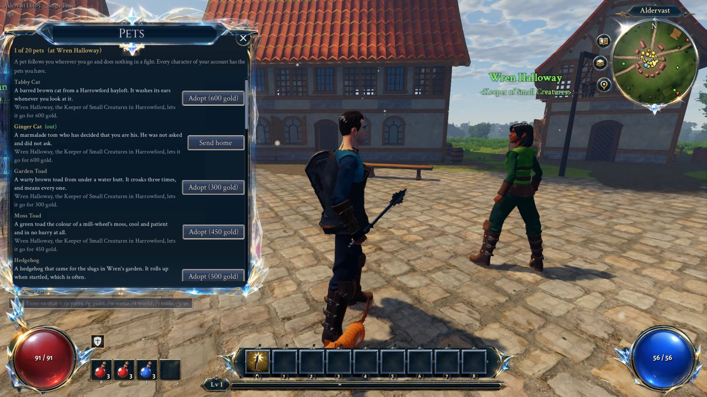
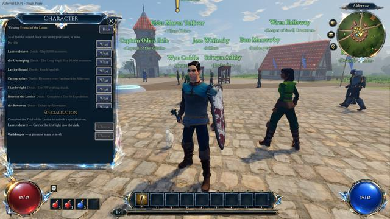
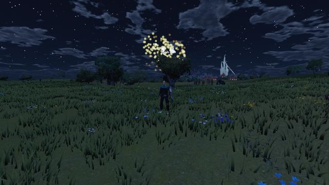
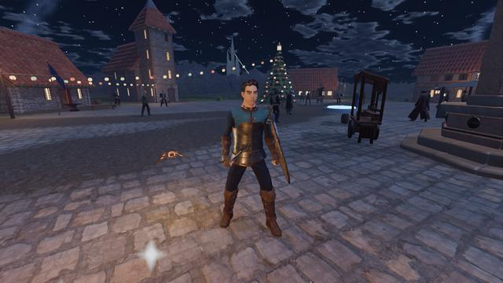

Tabby Cat
From Wren HallowayA barred brown cat from a Harrowford hayloft. It washes its ears whenever you look at it.
- Found
- Wren Halloway, the Keeper of Small Creatures in Harrowford, for 600 gold
- Its trick
- Washes behind its ear
The twenty small creatures that follow a hero, and where to find each one.
Pets are small creatures that follow you about (1.14.91). A pet walks or runs at your heel, turns where you go, keeps clear of your horse when you ride and paddles through the shallows. When you stop it now and then does its trick, and after a while it sits down. Everyone sees your pet; it does nothing in a fight and is never hurt.
Pets belong to your account: every one of your characters has every pet you own, and each calls out one at a time. Open them with F2, or Pets in the menu; the window lists every pet, the ones you have and where to find the rest. Deeds you earned before 1.14.91 give their pets the next time you come into the world.

A barred brown cat from a Harrowford hayloft. It washes its ears whenever you look at it.
A marmalade tom who has decided that you are his. He was not asked and did not ask.
A warty brown toad from under a water butt. It croaks three times, and means every one.
A green toad the colour of a mill-wheel's moss, cool and patient and in no hurry at all.
A hedgehog that came for the slugs in Wren's garden. It rolls up when startled, which is often.
A hare from the barley round Harrowford, long in the leg, black at the ear-tips. It sits up to listen.

A masked ferret that dances sideways when it is pleased, which is whenever there is a sock to steal.
A grey ferret, sleek as a pewter jug and twice as nosy.
A red fox not long out of the earth, all ears and tail. It follows anyone who feeds it.
A wild boar's piglet, striped like a melon. It roots in everything and squeals at nothing.
A wolf pup from a Thornwood litter the foresters found alone. It will not be left behind.
A hound's pup with too much leg. It has been everywhere you have, and wants to go again.
A crab from the Saltreach that climbed into a creel and would not climb out.
A blond hedgehog that only comes out at night. It kept the vigil with you, or at least kept you company.
A cream ferret with pink eyes, worth its weight in silver to the right buyer. Nobody has found the right buyer.
A hare in its winter white that came down from the White Hollow when the Long Snow lifted.

A black cat from the Old Chandlery's cellars, singed at the whiskers. It does not like the dark either.
A cub of the Long Snow, its coat already frosted at the tips. Rimeback was not its mother. Probably.
A toad the colour of old gold that sat out Elderhorn's fall under a fern. The Glade's luck, they say.
One of the Unlit that came in out of the dark when the Hush fell, and found a light still burning in its wick. It keeps close to whoever was there.

A moth that came to the feast's lanterns and stayed, its own little lantern lit inside it.

A grizzled grey tracking hound with a nose for trouble, who sits by the notice board and sniffs every new paper.